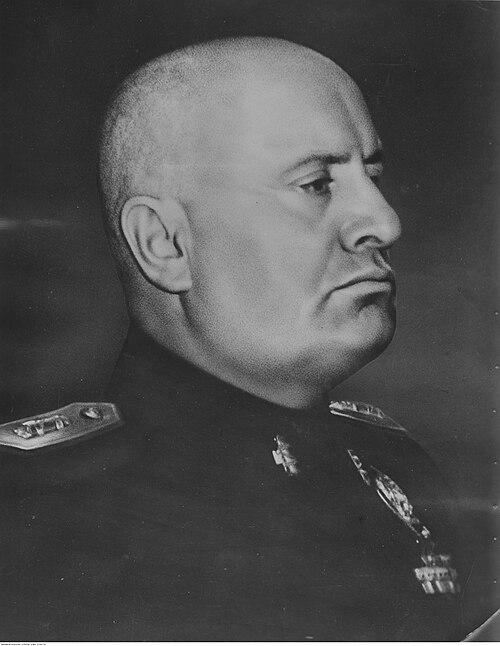

Benito Mussolini
Fundador del fascismo y dictador de Italia (1922-1943), aliado principal de la Alemania nazi en Europa. Su ambición imperial arrastró a Italia a una guerra para la que no estaba preparada.
Datos
| Nombre completo | Benito Amilcare Andrea Mussolini |
|---|---|
| Nacimiento | 29 de julio de 1883, Predappio (Italia) |
| Fallecimiento | 28 de abril de 1945, Giulino di Mezzegra (ejecutado por partisanos) |
| Cargo | Primer ministro y Duce (1922-1943); jefe de la República Social Italiana (1943-1945) |
| Partido | Partido Nacional Fascista |
Orígenes y juventud socialista
Benito Mussolini nació en 1883 en Predappio, en la región italiana de Romaña, en una familia humilde. Su padre era herrero y socialista, y su madre maestra católica. De él heredó las ideas de izquierda que marcaron su primera etapa. Fue un niño inteligente pero indisciplinado y violento. Trabajó como maestro y emigró un tiempo a Suiza, donde entró en contacto con el movimiento obrero y se familiarizó con el pensamiento revolucionario.
De regreso en Italia, Mussolini se convirtió en un destacado periodista y agitador socialista, llegando a dirigir Avanti!, el principal diario del partido. Era un orador vibrante y un polemista feroz. Sin embargo, su nacionalismo latente lo llevó a romper con el socialismo cuando estalló la Primera Guerra Mundial: mientras el partido defendía la neutralidad, Mussolini abogó por la intervención de Italia en el bando aliado, lo que provocó su expulsión.
El nacimiento del fascismo
Tras combatir y ser herido en la guerra, Mussolini regresó a una Italia sumida en la crisis de la posguerra: paro, huelgas, inflación y un profundo descontento por la "victoria mutilada", pues el país sentía que no había recibido las recompensas territoriales prometidas. En ese clima de miedo al comunismo y frustración nacionalista, fundó en Milán, en 1919, los Fasci Italiani di Combattimento, germen del movimiento fascista.
El fascismo combinaba un nacionalismo exaltado, el culto a la violencia y la acción, el rechazo tanto del liberalismo como del socialismo, y la promesa de restaurar la grandeza de Italia evocando el Imperio romano. Sus escuadras paramilitares, los "camisas negras", atacaban a socialistas, sindicatos y cooperativas, ganándose el respaldo de terratenientes, industriales y sectores de las clases medias asustados por la izquierda.
La toma del poder
En octubre de 1922, Mussolini organizó la Marcha sobre Roma, una demostración de fuerza en la que miles de fascistas convergieron sobre la capital. Ante la amenaza y la debilidad del sistema parlamentario, el rey Víctor Manuel III, en lugar de reprimir el movimiento, encargó a Mussolini formar gobierno. Con solo 39 años, se convertía en el primer ministro más joven de la historia de Italia.
Durante los años siguientes fue vaciando la democracia desde dentro: manipuló la ley electoral, y tras el asesinato del diputado socialista Giacomo Matteotti en 1924 —crimen que le salpicó directamente—, endureció la dictadura. Hacia 1925-1926 había suprimido la oposición, la libertad de prensa y los partidos, estableciendo un Estado totalitario de partido único bajo su liderazgo personal, el del Duce.
El régimen fascista
El régimen de Mussolini se basó en la propaganda, el culto a su persona ("Mussolini siempre tiene razón"), el corporativismo económico y la militarización de la sociedad. Firmó los Pactos de Letrán (1929) con el Vaticano, resolviendo el viejo conflicto con la Iglesia y reforzando su prestigio. Impulsó grandes obras públicas y proyectó una imagen de eficacia y modernidad ("hizo que los trenes llegaran a la hora", según el mito propagandístico).
Tras las cámaras, sin embargo, había represión política, una policía secreta (la OVRA), el destierro de opositores y un control férreo de la información. Mussolini se erigió en modelo para otros movimientos autoritarios europeos, incluido el joven Hitler, que lo admiraba.
Ambición imperial y alianza con Hitler
Obsesionado con recrear un imperio mediterráneo, Mussolini invadió Etiopía en 1935, en una guerra brutal que empleó armas químicas y que le enfrentó a la Sociedad de Naciones, provocando sanciones y su aislamiento de las democracias. Ese distanciamiento lo empujó hacia la Alemania nazi. Intervino también en la Guerra Civil española (1936-1939) apoyando a Franco.
El acercamiento a Hitler culminó en el Eje Roma-Berlín y, en mayo de 1939, en el Pacto de Acero, una alianza militar plena. Mussolini quedó así atado al destino de una Alemania mucho más poderosa, en una relación en la que cada vez llevaba las de perder.
Papel en la guerra
Consciente de la debilidad militar italiana, Mussolini mantuvo a Italia fuera del conflicto en 1939. Pero en junio de 1940, con Francia ya derrotada, declaró la guerra creyendo que sería breve y que podría sentarse a la mesa de los vencedores con un coste mínimo. Fue un cálculo desastroso.
Las campañas italianas resultaron un fracaso tras otro: la invasión de Grecia desde Albania (1940) fue rechazada humillantemente y tuvo que ser rescatada por Alemania (ver la campaña en los Balcanes); en el Norte de África, las tropas italianas cedieron ante los británicos y solo se sostuvieron gracias al Afrika Korps de Rommel; en el mar y en el Frente Oriental, Italia aportó fuerzas que sufrieron enormes pérdidas. La dependencia de Alemania se hizo total, y el prestigio del Duce se desmoronó dentro y fuera del país.
La caída y la República de Saló
El desembarco aliado en Sicilia en julio de 1943 (ver Batalla de Italia) precipitó su caída. El propio Gran Consejo Fascista votó en su contra, el rey lo destituyó y ordenó su arresto. Italia firmó poco después un armisticio con los Aliados. Pero Alemania reaccionó ocupando el país, y un comando dirigido por Otto Skorzeny rescató a Mussolini en un audaz golpe de mano.
Hitler lo puso al frente de un estado títere en el norte de Italia, la República Social Italiana (o República de Saló), sin poder real y sometido por completo a los alemanes. En ella, un Mussolini envejecido y amargado ordenó ejecutar a varios de los jerarcas fascistas que lo habían traicionado, incluido su propio yerno, Galeazzo Ciano.
Final
Al hundirse el frente italiano en abril de 1945, Mussolini intentó huir hacia Suiza disfrazado, en una columna alemana. Fue reconocido y capturado por partisanos italianos cerca del lago de Como. El 28 de abril fue fusilado junto a su amante, Clara Petacci. Sus cuerpos fueron trasladados a Milán y colgados boca abajo en una plaza pública, expuestos a la ira popular, en una imagen que dio la vuelta al mundo como símbolo del final del fascismo italiano.
Legado y valoración histórica
Mussolini pasó a la historia como el creador del fascismo, una ideología que inspiró a numerosos regímenes autoritarios del siglo XX, empezando por el nazismo alemán. Durante un tiempo fue admirado incluso fuera de Italia por su aparente eficacia, pero su megalomanía, su brutalidad y su desastrosa aventura bélica arruinaron a su país y le costaron cientos de miles de vidas.
Su figura sigue generando debate en Italia, donde conviven la condena mayoritaria de su dictadura con algunas corrientes nostálgicas. Para la historiografía, encarna los peligros del nacionalismo extremo, del culto al líder y de la militarización de la política.
← Volver a Líderes